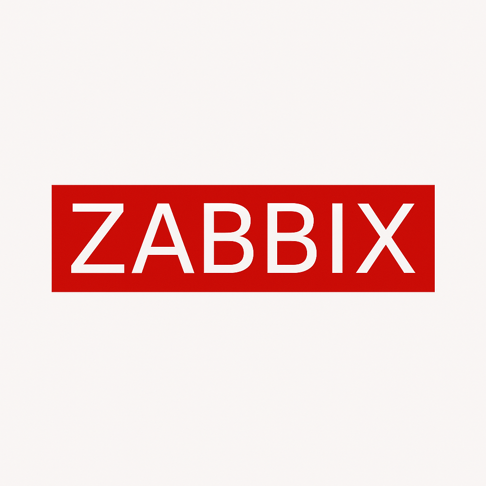
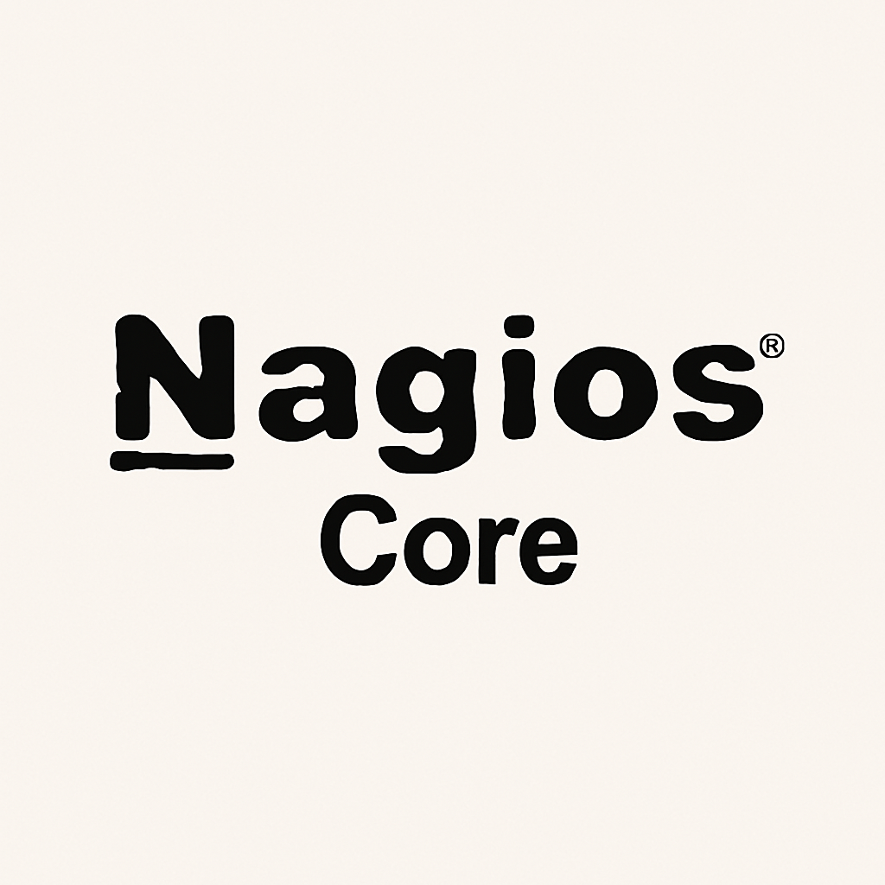
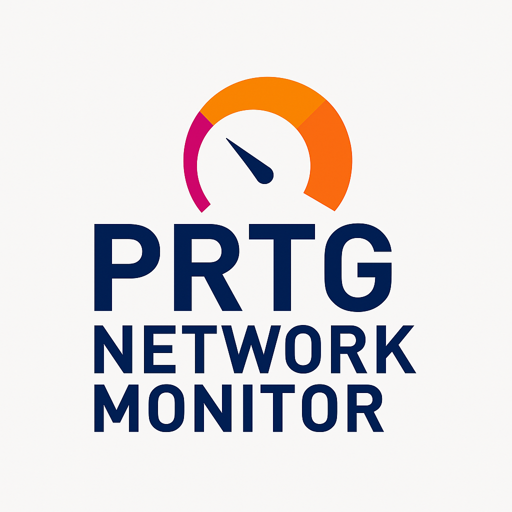
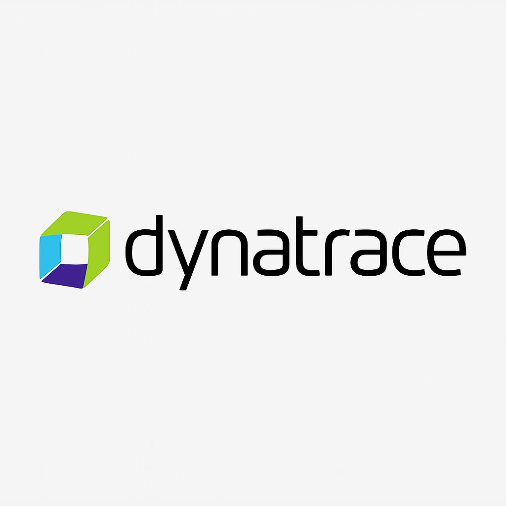
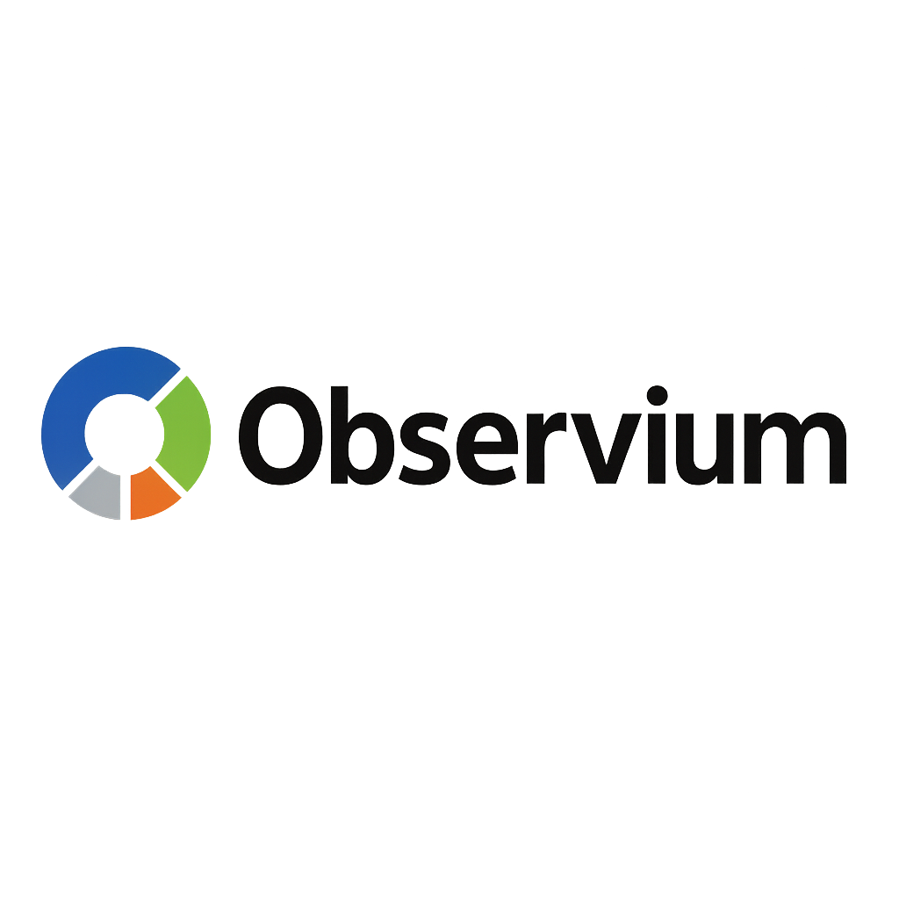
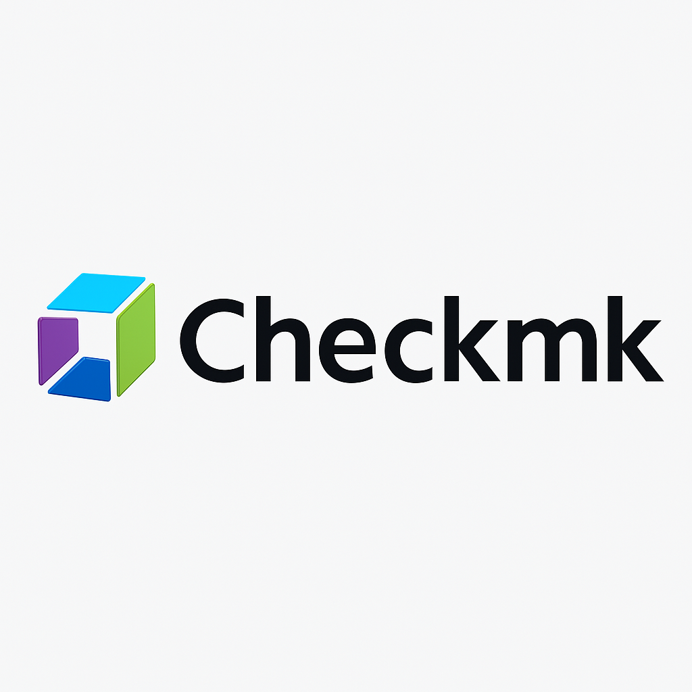

Estamos em busca de uma ferramenta open-source para o monitoramento de dispositivos de rede. Embora alguns
colaboradores tenham mencionado sistemas interessantes, essa escolha será baseada em uma análise técnica
realizada por profissionais especializados, garantindo que a solução atenda de forma adequada às nossas
necessidades.
Abaixo apresentamos um levantamento com os requisitos básicos de algumas ferramentas recomendadas.

Zabbix
- Monitoramento completo de rede e servidores
- Suporte a SNMP, IPMI, SSH, JMX
- Dashboard personalizável
- Alertas e gráficos detalhados
- Comunidade ativa e documentação robusta

Nagios Core
- Monitoramento de hosts e serviços
- Arquitetura baseada em plugins
- Alertas por e-mail e SMS
- Interface simples baseada em arquivos de texto
- Integração com outras ferramentas
LibreNMS
- Detecção automática de dispositivos
- Gráficos interativos e dashboards
- Alertas configuráveis
- Interface web moderna
- Fácil de instalar e usar
Prometheus + Grafana
- Coleta de métricas de alto desempenho
- Dashboards visuais com Grafana
- Suporte a múltiplos exportadores
- Alertas baseados em regras
- Ideal para grandes ambientes
Icinga
- Fork avançado do Nagios
- Interface web moderna e responsiva
- Monitoramento distribuído e escalável
- Visualização detalhada de alertas e métricas
- API REST para automações

Netdata
- Monitoramento em tempo real e detalhado
- Instalação rápida com um único comando
- Interface com gráficos dinâmicos
- Baixo uso de recursos do sistema
- Alertas integrados e exportação de dados

PRTG Network Monitor
- Monitoramento de rede, servidores e aplicativos
- Interface intuitiva baseada na web
- Alertas customizáveis
- Gráficos e relatórios automáticos
- Versão gratuita com sensores limitados

Dynatrace
- Observabilidade com inteligência artificial
- Monitoramento full-stack
- Alertas inteligentes com root cause
- Integração com DevOps e CI/CD
- Interface moderna e responsiva

Observium
- Foco em redes e dispositivos SNMP
- Auto descoberta de dispositivos
- Gráficos RRDTool integrados
- Baixa complexidade de instalação
- Versão gratuita e profissional

Checkmk
- Monitoramento de sistemas, rede e aplicações
- Baseado no Nagios, mas mais intuitivo
- Instalação simplificada via appliance
- Dashboards ricos e detalhados
- Suporte a agentes e SNMP